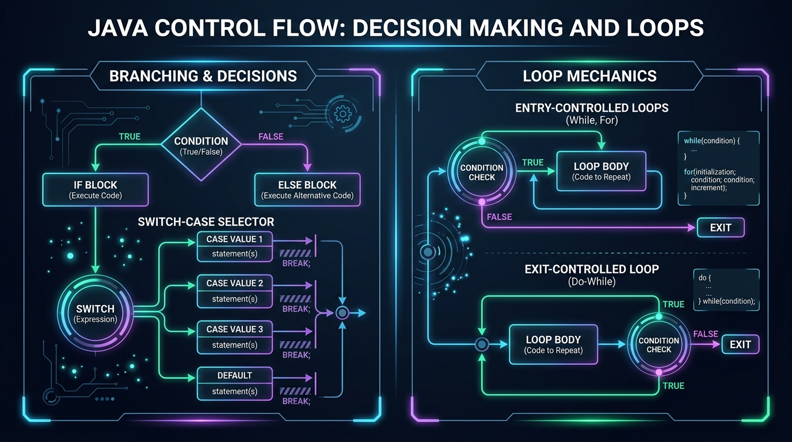

Control flow relies entirely on boolean decisions. Let's recall three key concepts from Session 2:
- Relational Comparisons: Expressions like
score >= 50orcount < 10always evaluate to eithertrueorfalse. That true/false answer is the fuel that drives everyifstatement and loop! - Compound Logic: Remember that
&&(AND) requires both conditions to be true, while||(OR) requires only one to be true. - String Equality Trap: Never compare text with
role == "ADMIN"! In Java, always userole.equals("ADMIN")because==compares memory addresses rather than the characters inside.
1. What is Control Flow?
By default, the JVM executes code sequentially from the first statement of main to the last.
Control Flow statements interrupt that straight highway:
- Selection / Branching: Choosing one path among multiple alternatives (e.g. "If balance >= $100, approve withdrawal; otherwise decline").
- Iteration / Looping: Repeating a block of code multiple times until a condition changes.
- Jumping: Skipping iterations or breaking out of code blocks early.

Branching is drawn as a diamond: the condition is tested once, and
exactly one arrow out of it (the true path or the false path)
is followed. Looping is drawn as an arrow that curls back: the body
runs, then flow returns to the condition; while it stays true the body
repeats, and when it turns false flow exits downward.
2. The Four Forms of the if Statement
A. Simple if
Executes a block of code ONLY if the condition evaluates to true. If false, it does nothing and moves on.
if (batteryLevel < 20) {
System.out.println("Warning: Low Battery! Please plug in your charger.");
}B. if - else
Provides an alternative fallback block if the test condition is false:
int age = 19;
if (age >= 18) {
System.out.println("Eligible to vote in campus elections.");
} else {
System.out.println("Not yet eligible to vote.");
}C. if - else if - else Ladder
Used when evaluating a chain of mutually exclusive conditions from top to bottom:
int score = 84;
if (score >= 90) {
System.out.println("Grade: A (Distinction)");
} else if (score >= 80) {
System.out.println("Grade: B (Credit)");
} else if (score >= 70) {
System.out.println("Grade: C (Pass)");
} else {
System.out.println("Grade: F (Fail)");
}D. Nested if
An if statement nested inside another if block. Used for multi-stage verification:
boolean isCustomerRegistered = true;
double cartTotal = 150.00;
if (isCustomerRegistered) {
if (cartTotal > 100.00) {
System.out.println("You qualify for Free Express Shipping!");
} else {
System.out.println("Add more items to unlock free shipping.");
}
} else {
System.out.println("Please sign in or create an account.");
}3. The switch-case Statement
When testing a single variable against a fixed set of specific constant values, an if-else-if ladder looks cluttered.
The switch statement provides a cleaner, faster alternative.
int dayNumber = 3;
switch (dayNumber) {
case 1:
System.out.println("Monday - Start of the week!");
break; // Stops execution from bleeding into the next case!
case 2:
System.out.println("Tuesday - Coding Lab Day");
break;
case 3:
System.out.println("Wednesday - Mid-week Progress Check");
break;
case 4:
System.out.println("Thursday - Project Workshop");
break;
case 5:
System.out.println("Friday - Hackathon Day!");
break;
default:
System.out.println("Weekend - Relax & Review!");
break;
}
If you omit the break; statement at the end of a case, Java will continue executing all subsequent cases below it, regardless of whether their conditions match, until it encounters a break or hits the end of the switch!
Permitted Types in a switch:
In Java, the expression in a switch statement can be:
byte, short, char, int, String (since Java 7), and enum.
Note: float, double, and boolean are NOT allowed in a switch!
Modern Java has a tidier switch that needs no break; and
cannot fall through:
switch (dayNumber) {
case 1 -> System.out.println("Monday");
case 2, 3, 4 -> System.out.println("Mid-week");
default -> System.out.println("Weekend");
}
We teach the classic case: + break; form now because it is
everywhere in existing code and it makes fall-through visible. Session 14 covers the
arrow form and switch expressions.
4. Comparing if-else vs. switch-case
| Criteria | if - else |
switch - case |
|---|---|---|
| Evaluation | Can test complex boolean expressions, ranges (score >= 70 && score <= 80), and multiple variables. |
Tests a single variable for equality against discrete constants. |
| Supported Types | Any expression evaluating to a boolean. |
Integers, characters, strings, and enums only. |
| Readability | Can become unreadable with many discrete equality checks. | Extremely clean and organized for menu options and state machines. |
5. Introduction to Loops (Iteration)
Imagine writing a program to print the numbers from 1 to 1,000.
Writing 1,000 lines of System.out.println() would be exhausting, error-prone, and unmaintainable.
A loop executes a block of code repeatedly as long as a specified condition remains true.
• Entry-Controlled (Pre-test): Checks the condition BEFORE executing the loop body (e.g. while, for). If the condition is false initially, the body runs 0 times.
• Exit-Controlled (Post-test): Executes the loop body FIRST, then checks the condition at the end (e.g. do-while). Guaranteed to execute at least once!
6. The while Loop (Entry-Controlled)
Use when you don't know the exact number of iterations in advance, but know the stopping condition.
int count = 1; // 1. Initialization
while (count <= 5) { // 2. Condition Check
System.out.println("Processing student record #" + count);
count++; // 3. Update / Increment (CRITICAL to avoid infinite loops!)
}Write down every variable after every line. This is the #1 skill for finding loop bugs.
| Pass | count at test | count <= 5? | Prints | count after count++ |
|---|---|---|---|---|
| 1 | 1 | true | … record #1 | 2 |
| 2 | 2 | true | … record #2 | 3 |
| 3 | 3 | true | … record #3 | 4 |
| 4 | 4 | true | … record #4 | 5 |
| 5 | 5 | true | … record #5 | 6 |
| 6 | 6 | false → exit | — | — |
The body ran 5 times. Change the test to
count < 5 and it would run only 4 times — that one character is an
off-by-one error.
1. Off-by-one. < vs <=, or starting at
0 vs 1, changes the count by one. To loop n times from
0: for (int i = 0; i < n; i++). To loop from 1 to n inclusive:
for (int i = 1; i <= n; i++).
2. Infinite loop. If the condition never becomes false — you forgot
count++, or you update the wrong variable — the program hangs forever.
To stop a runaway program: press Ctrl+C in the
terminal, or click the red ■ Stop button in IntelliJ's Run panel. Then find
which variable the condition depends on and make sure the body changes it toward false.
7. The do-while Loop (Exit-Controlled)
The do-while loop is perfect for interactive menus or password prompts where you must prompt the user at least once before checking if they want to repeat or exit.
int attempts = 0;
do {
System.out.println("Attempting server handshake...");
attempts++;
} while (attempts < 1); // Note the required semicolon after the while condition!A realistic use: a menu that must be shown at least once and repeats until the user
chooses "Exit". This combines do-while with the Scanner from
Session 2 and a switch:
import java.util.Scanner;
public class MenuLoop {
public static void main(String[] args) {
Scanner in = new Scanner(System.in);
int choice;
do {
System.out.println("\n1) Say hello 2) Show time left 3) Exit");
System.out.print("Choose: ");
choice = in.nextInt();
switch (choice) {
case 1 -> System.out.println("Hello!");
case 2 -> System.out.println("Two hours of class remain.");
case 3 -> System.out.println("Goodbye.");
default -> System.out.println("Unknown option, try again.");
}
} while (choice != 3); // repeats until the user picks 3
in.close();
}
}8. The for Loop (Counter-Controlled)
When you know precisely how many times an operation should run, the for loop is the cleanest, most popular construct in Java because it bundles the three lifecycle components into one line:
// (1) Init ; (2) Condition ; (3) Update
for (int step = 1 ; step <= 5 ; step++ ) {
System.out.println("Step number: " + step);
}9. Nested Loops (Rows & Columns)
A nested loop is simply a loop inside another loop. Think of an Excel spreadsheet: the outer loop controls which row you are on, while the inner loop visits every column inside that row.
for (int row = 1; row <= 3; row++) {
for (int col = 1; col <= 4; col++) {
System.out.print("[" + row + "," + col + "] ");
}
System.out.println(); // Jump to next line after row finishes
}The inner loop finishes completely before the outer loop advances. Total body runs: 3 × 4 = 12.
row | col goes | Line printed |
|---|---|---|
| 1 | 1,2,3,4 | [1,1] [1,2] [1,3] [1,4] |
| 2 | 1,2,3,4 | [2,1] [2,2] [2,3] [2,4] |
| 3 | 1,2,3,4 | [3,1] [3,2] [3,3] [3,4] |
The lone System.out.println() after the inner loop
is what ends each row — remove it and all 12 cells print on one line.
10. Jump Statements: break & continue
break: Emergency Stop
Instantly terminates the enclosing loop or switch statement and resumes execution at the code following the loop.
for (int i = 1; i <= 10; i++) {
if (i == 6) {
break; // Stops the loop entirely when i reaches 6
}
System.out.print(i + " "); // Output: 1 2 3 4 5
}continue: Skip to Next Lap
Immediately skips the remainder of the current iteration and jumps directly to the update step of the next iteration.
for (int i = 1; i <= 6; i++) {
if (i % 2 == 0) {
continue; // Skips even numbers
}
System.out.print(i + " "); // Output: 1 3 5
}11. Executive Quick-Recap & Cheat Sheet
Everything you need to master Java decision-making and loops at a glance:
⚡ The 30-Second Mental Model
Branching (if/else, switch) chooses which block of code executes based on a condition.
Loops (for, while, do-while) choose how many times a block repeats.
Remember: while/for check before entering (can run 0 times); do-while checks at the end (always runs at least once).
Control Flow Syntax at a Glance
// 1. if - else if - else
if (score >= 90) { grade = 'A'; }
else if (score >= 80) { grade = 'B'; }
else { grade = 'F'; }
// 2. switch (Permitted: int, String, char, byte, short, enum)
switch (role) {
case "ADMIN": grantFullAccess(); break; // Don't forget break!
case "USER": grantUserAccess(); break;
default: denyAccess(); break;
}
// 3. for loop (Known repetition count)
for (int i = 0; i < 5; i++) { /* Runs 5 times: 0,1,2,3,4 */ }
// 4. while loop (Condition-driven)
while (balance > 0) { makePayment(); }
// 5. do-while loop (Guaranteed at least once)
do { displayMenu(); } while (userChoice != 5);
// 6. Jumps: break (exit loop), continue (skip to next lap)Plain-English Glossary
A loop (like for or while) that tests its condition before running the body. If false initially, it executes 0 times.
A loop (do-while) that executes its body first, then tests the condition at the end. Always executes at least once.
The default behavior in a switch statement where execution rolls into subsequent cases if break; is omitted.
A loop whose condition never becomes false and lacks a terminating break, causing the program to freeze or hang.
break halts the entire loop immediately; continue skips the rest of the current cycle and jumps to the next iteration.
A loop placed inside the body of another loop, commonly used for processing rows and columns or multi-dimensional data.
12. Summary & Interactive Self-Checks
Try these, then verify against this lesson (see the AI Tutor Guide):
- "Trace this loop line by line and show a table of each variable per pass:
for (int i = 0; i <= 5; i++) sum += i;" - "Here is a loop that runs one time too many. What's the off-by-one mistake? [paste your code]"
- "Give me 6 practice problems on nested loops (patterns, grids, tables), easy to hard, problems only."
Test your logic skills on these quick scenario checks before proceeding to the class lab: